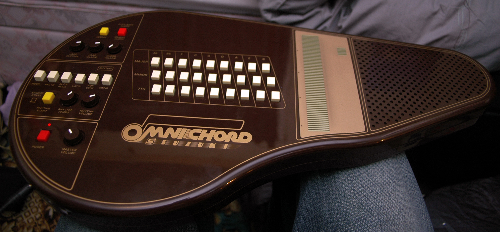
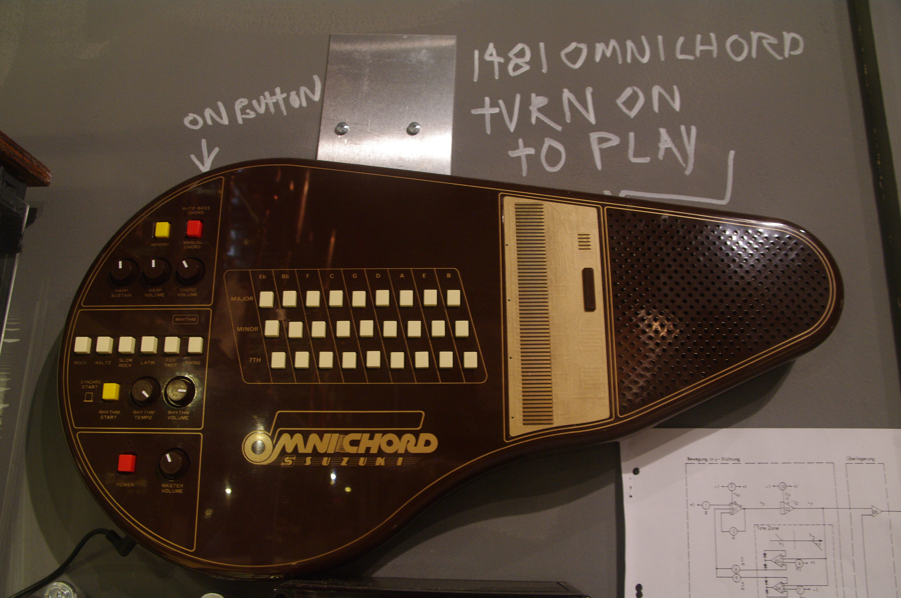

Suzuki Omnichord
The electronic autoharp that replaced strings with a capacitive touch strip

Overview
The Omnichord is an electronic musical instrument introduced in 1981 by Suzuki, the Japanese manufacturer known for educational instruments like the Melodion. Conceived as an electronic autoharp, it replaced strings with a capacitive touch plate (branded "Sonic Strings") and chord theory with a grid of buttons. The left hand selected chords from a grid (27 on the original OM-27, up to 84 on later models); the right hand strummed the touch strip. The notes produced were always in key with the selected chord. Built-in rhythm machine and auto-bass line provided accompaniment. The OM-27 had only a single "harp" sound. Successive models added voices (guitar, piano, banjo, organ, vibes, brass, synth), MIDI connectivity, chord sequencing, and more rhythms. Production ran through the OM-300 in 1996, with a revival OM-108 released in 2024.
Deep dive
Suzuki designed the Omnichord for people without musical experience who might be intimidated by traditional keyboard instruments. The OM-27 launched in 1981 alongside the Tronichord (also called the Portachord). At the time, this was a genuinely new idea: a mass-market electronic instrument where you literally could not play a wrong note. The constrained output was the feature.
The "Sonic Strings" capacitive touch strip maps chord-degree arpeggios across a 4-octave span, always harmonically constrained by the currently selected chord button. The physical gesture — strumming — is preserved from acoustic autoharps, but the interaction surface is purely electronic. The strip detects finger position and velocity, translating them into MIDI or internal sound generation. This is one of the earliest mass-market consumer devices where a capacitive touch strip served as the primary expressive surface.
The Omnichord requires a distinctive two-handed coordination unlike any traditional instrument: chord selection with the left hand, strumming expression with the right. Neither guitarists nor keyboardists had this exact skill; everyone learned it fresh.
David Bowie used an Omnichord for his performance of "America" at the 2001 Concert for New York City. Brian Eno and Daniel Lanois slowed down Omnichord recordings for "Deep Blue Day" from Apollo: Atmospheres and Soundtracks (1983), creating what Lanois called a "beautiful, deep, jukebox sound." Eurythmics used the harp sound on "Love Is a Stranger" (1982). Gorillaz used the OM-300's "Rock 1" preset for "Clint Eastwood" (2001). Meshell Ndegeocello's album The Omnichord Real Book won the inaugural Grammy Award for Best Alternative Jazz Album (2024).
The Omnichord's design philosophy — constrain output to guarantee pleasant results regardless of skill — anticipated Guitar Hero, Rock Band, and GarageBand's Smart Instruments by decades. Its approach to musical democratization through interaction design rather than simplified instruction represents a distinct HCI tradition that runs parallel to the more technical instrument-controller lineage. The 2024 OM-108 revival confirms its enduring appeal.
Team & pioneers
- Suzuki Musical Instrument Corporation Hamamatsu, Japan-based manufacturer of educational musical instruments. The Omnichord was their most distinctive electronic product line.
Media
